First, create a simple HTML file
Then go to computer, disk C, then in the inetpub folder go to wwwroot and paste the HTML file in that folder, make sure to rename this file index or else the HTML file will not work.
After go to the Internet Information Services Manager

In there go to the default document folder, if index.html and index.htm are in there you are all set.

After you must go to the firewall and open a port for this server. I chose 50456 for mine, inbound and outbound.
Follow the pictures below on what to click while setting this up.
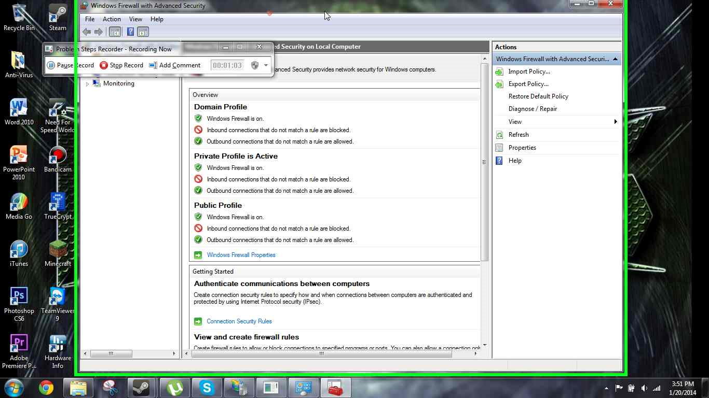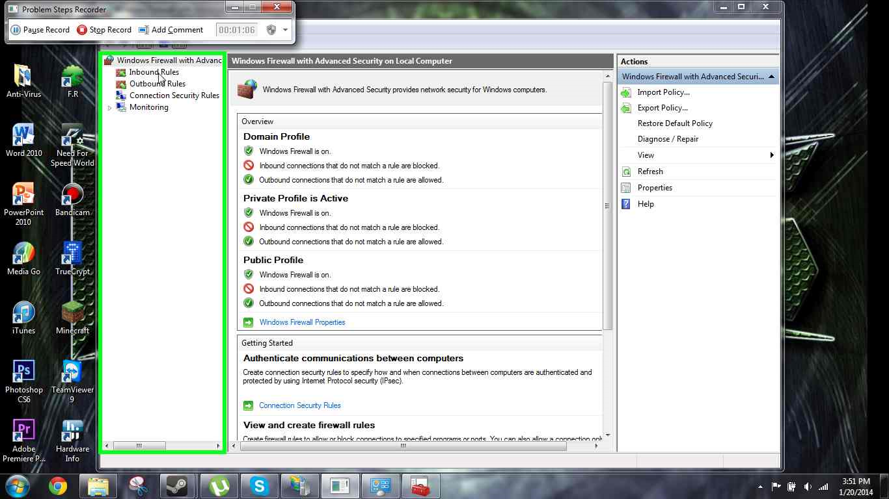
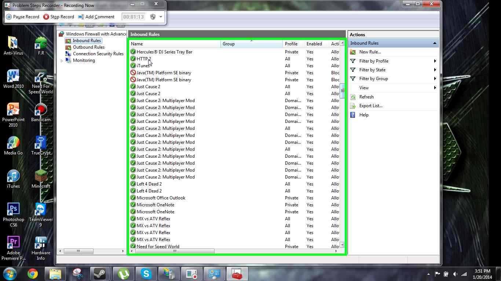
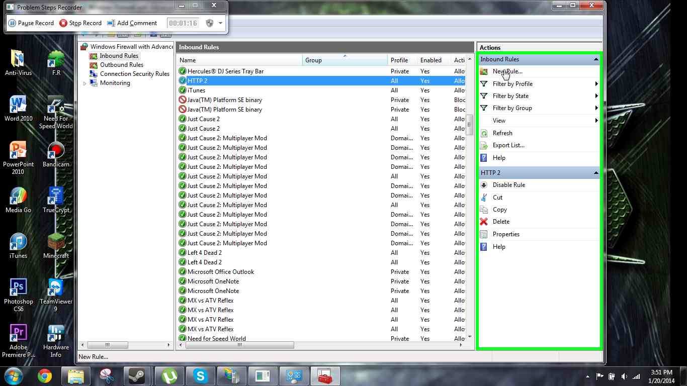
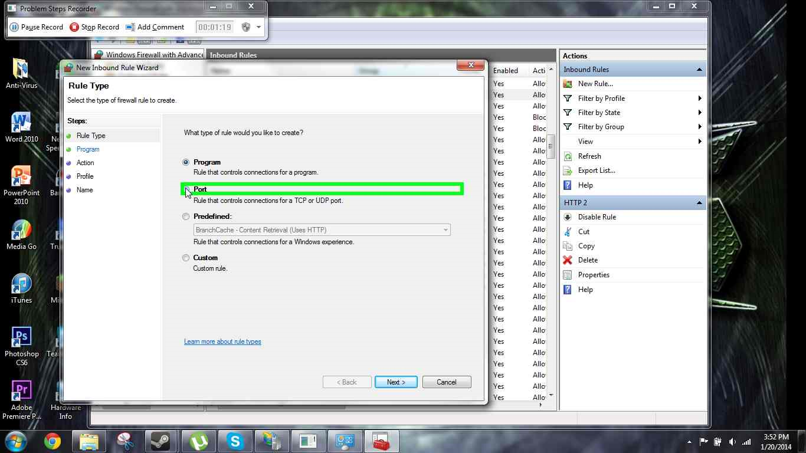
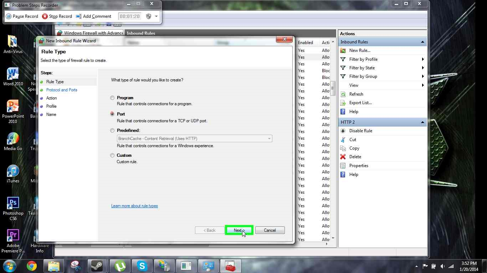
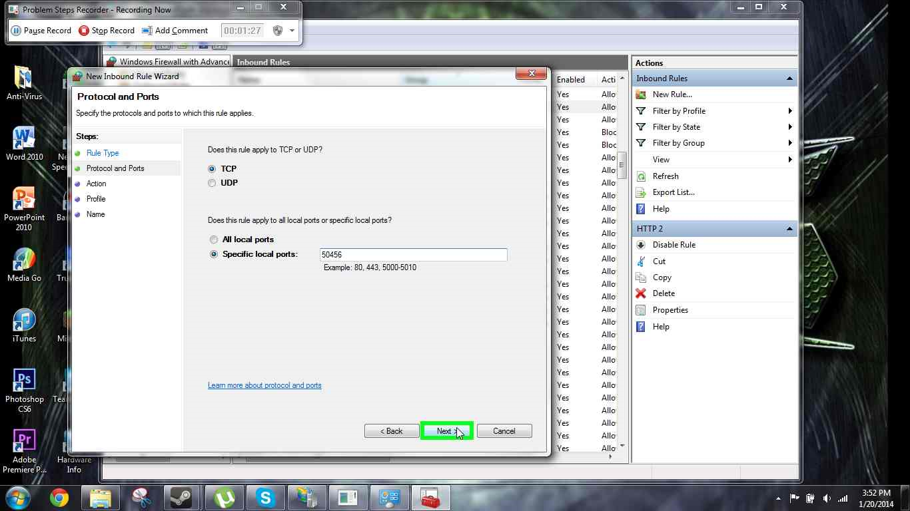
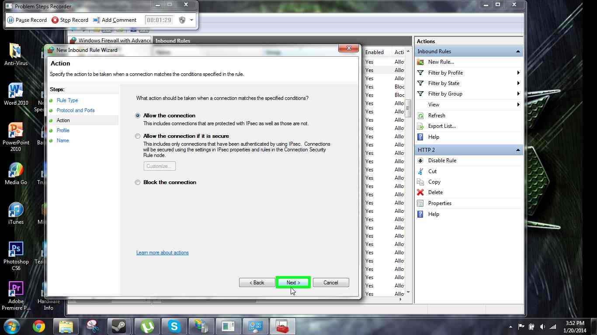
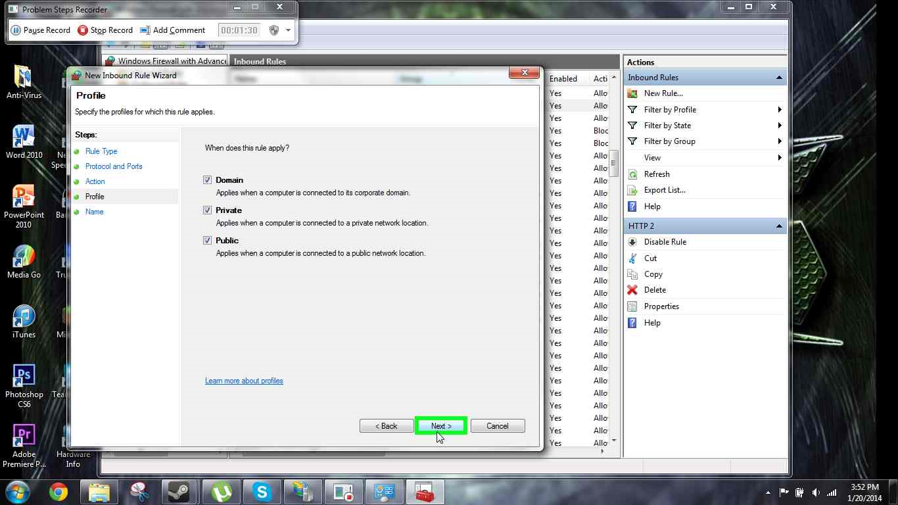
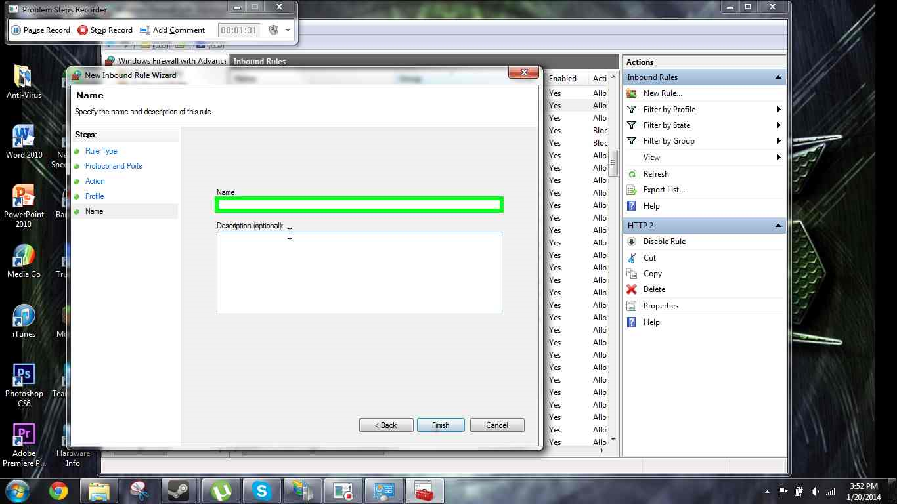
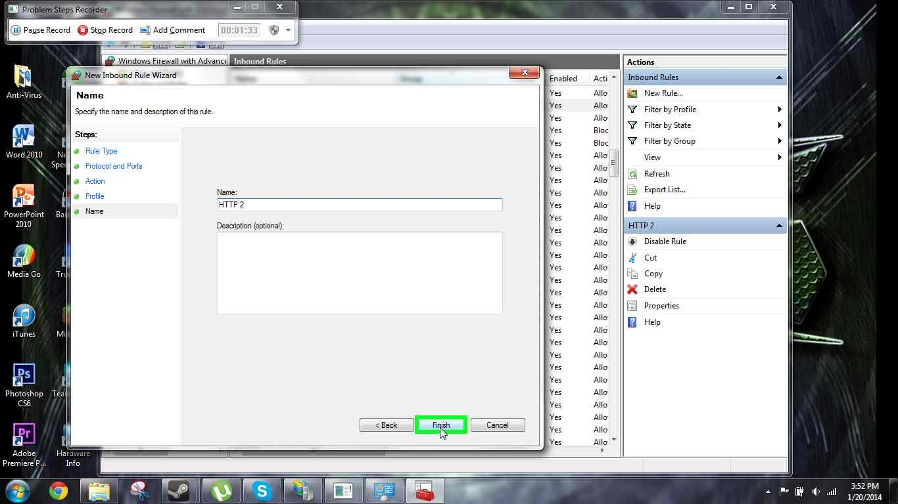
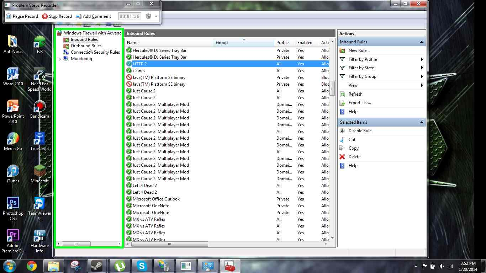
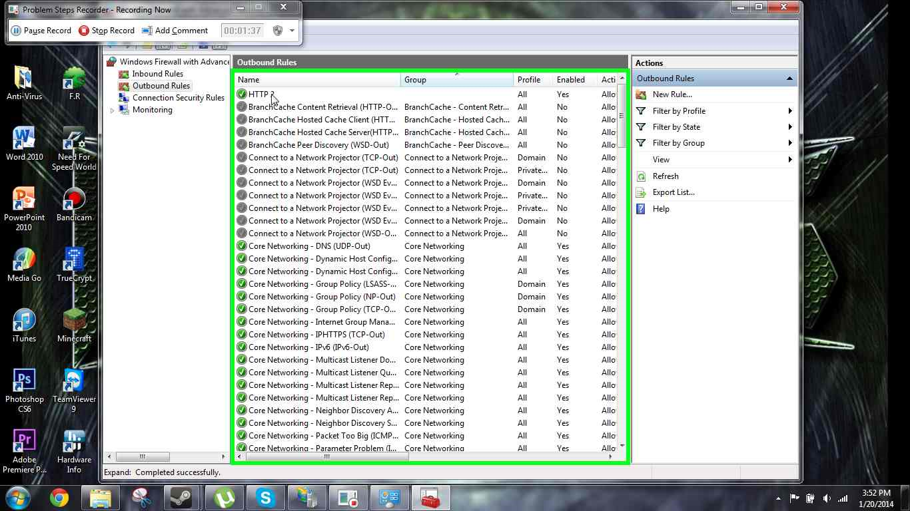
After type in you ip and your port into any web browser and it should be there!
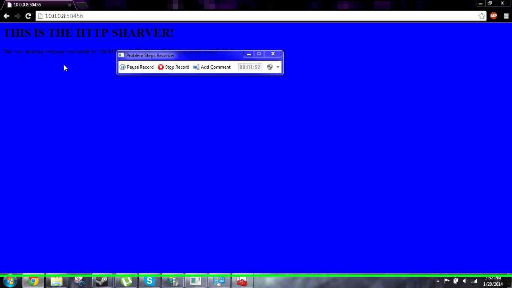Any computer on your network should be able to access it too if they open 50456 inbound and outbound ports!